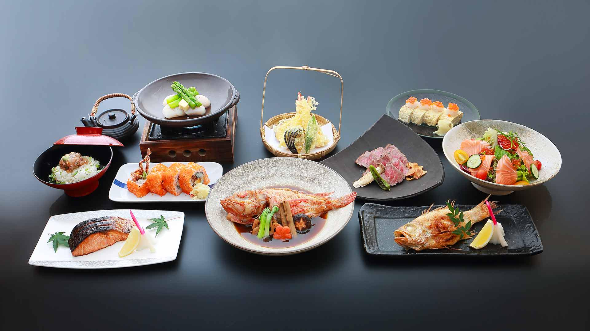

Experience The Essence Of Japanese Cuisine At Yorokobi
At Yorokobi, the Japanese restaurant that embodies the essence of culinary artistry, dining becomes an unforgettable journey of flavors and experiences. From the moment you step inside, you're enveloped in an atmosphere that seamlessly blends traditional Japanese aesthetics with modern elegance. The menu, curated with meticulous attention to detail, showcases a symphony of authentic Japanese dishes preparedwith the freshest ingredients and masterful techniques.

-Sushi Chef Hidekazu Tojo
Each dish at Yorokobi tells a story, inviting you to embark on a gastronomic adventure through the vibrant tapestry of Japanese cuisine. Whether you're indulging in exquisitely crafted sushi rolls, savoring the umami-rich flavors of traditional ramen, or delighting in the delicate textures of tempura, every bite is a revelation of culinary excellence.

But dining at Yorokobi is more than just a feast for the palate; it's a celebration of culture, tradition, and hospitality. The knowledgeable and attentive staff guide you through the menu with warmth and sincerity, ensuring that every aspect of your dining experience is nothing short of perfection.
In the heart of Yorokobi, amidst the soft glow of the lights and the gentle melody of Japanese music, diners come together to share not just a meal, but moments of joy, connection, and appreciation for the artistry of Japanese cuisine. Whether you're a seasoned aficionado or a newcomer eager to explore the world of Japanese flavors, a visit to Yorokobi promises an enchanting culinary journey that will leave you longing to return again and again.